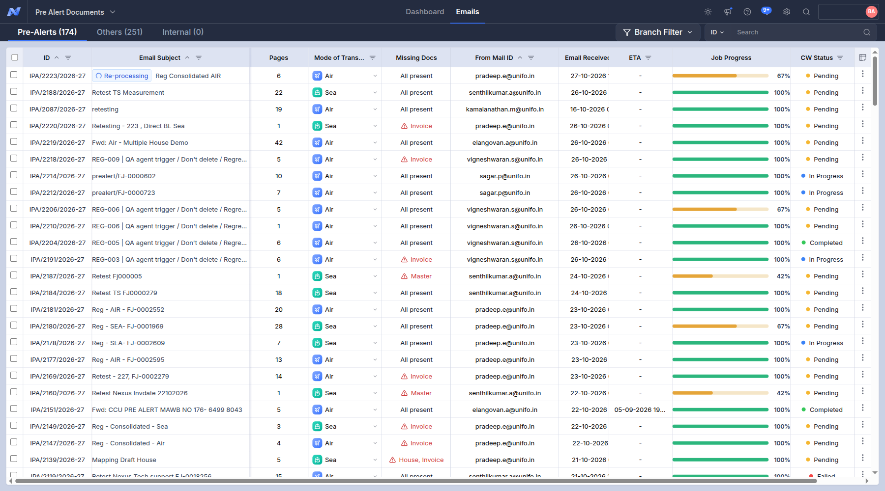
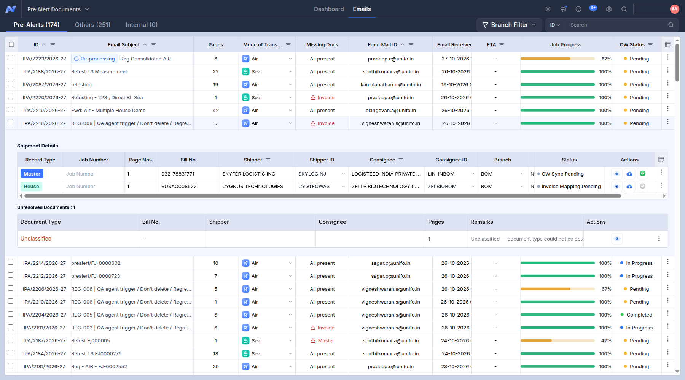
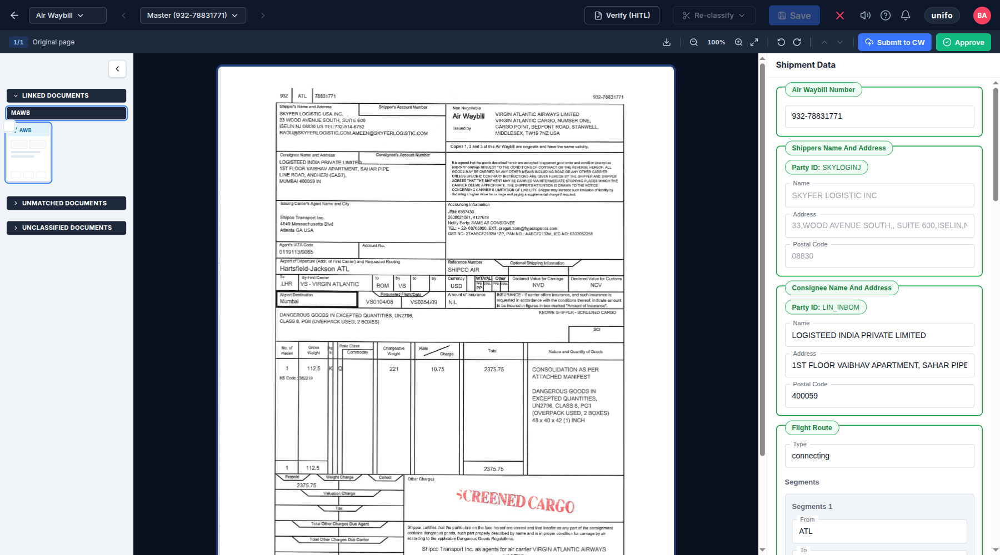

Trace of REG-009 - IPA-2218-2026-27 (3 screenshots, in the order they were taken)
01. Pre-Alerts tab: the row of this case (Pages, Missing Docs, Job Progress, CW Status)
01_prealerts_list.png

02. Pre-Alerts tab, row expanded: Shipment Details (Master / House records, Bill No., status)
02_prealert_expanded.png

03. Master data panel (checked against the document)
03_master_data.png
